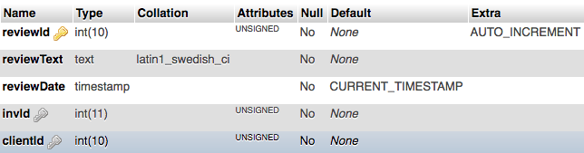

Final Project Directions
Throughout the semester you have built the Acme site and added CRUD functionality for products and clients, have used the Model-View-Control (MVC) architecture and paid close attention to validating incoming data and using PHP to make all of this work. The project below provides opportunity to make a few "tweeks" to what you have already done and add one final piece of functionality to enhance the content of the site using these same concepts.
Video Overview
The video demonstrates what the final project could look like, keep in mind your solution may be slightly different.
Be Mindful
This is the final project of the course. It is meant to challenging, but do-able. As with all other activities and enhancements you are encouraged work with your learning teams to accomplish it! It will take time, plan on it - you have slightly more than 2 weeks to finish it.
Project Tasks
The project calls for three tasks to be completed dealing with the Acme web site:
- Replace the cookie "Welcome" message with the first name of the logged-in client, specifically:
- When a client "logs-in" to the acme site delete the existing "firstname" cookie.
- Replace the cookie "welcome" display with a "welcome" message that includes the logged-in client's first name (e.g. Welcome Sally).
- Add the welcome message to all views.
- Display the welcome message while the client is logged-in. Remove the display when the client logs out.
- Be sure to thoroughly test to make sure the "welcome" message changes and displays when logged in and is not displayed when logged out and that the "firstname" cookie is destroyed after a user logs in.
- Wrap the logged-in "welcome" message in a link that will deliver the accounts "Admin" view when clicked on, specifically:
- The link should be directed to the appropriate controller.
- Modify the controller as needed to make sure the view can be delivered if the client is logged in, but the acme home view is delivered if the client is not logged in.
- The admin view, when delivered, should continue to work as it does now, showing the client's logged in status, their information and the additional links as appropriate to their client level.
- Be sure to thoroughly test to make sure the "welcome" message and link are functional across all views.
- Be sure that views continue to be valid HTML after the welcome message and link are present in the view and when they are not present in the view.
- The final task is to build a "product review" application that will allow product reviews to be added to the site. The specifics are:
Create the Database Table
- Build the "reviews" table in the acme database following this data dictionary specification: 
Create the Folder and Controller
- Create a "reviews" folder to store the controller for the application.
- Create the controller in the "reviews" folder:
- Use the typical name for the controller.
- Alter the default comment to indicate this is the reviews controller
- Start the session
- Get the typical list of required resources as all other controllers
- Build the $action collection code as used in other controllers.
- Build a Switch control structure for process control.
- All processes must follow the typical patterns established by similar processes in other controllers.
- The needed processes are:
- Add a new review
- Deliver a view to edit a review.
- Handle the review update.
- Deliver a view to confirm deletion of a review.
- Handle the review deletion.
- A default that will deliver the "admin" view if the client is logged in or the acme home view if not.
Create the Model
- Create a "reviews-model.php" file for all database functionality. The model will need functions to:
- Insert a review
- Get reviews for a specific inventory item
- Get reviews written by a specific client
- Get a specific review
- Update a specific review
- Delete a specific review
- Be sure it is required into the controller.
Add and Display Reviews
- In the existing "product detail" view provide text, that is clearly visible when the page loads, indicating that product reviews can be seen at the bottom of the page.
- Create a clear "Customer Reviews" heading after the product thumbnail images area.
- Beneath the "Customer Reviews" heading show text indicating that a review can be added by "logging in" and provide a link to the deliver the "login" view. If the client is already logged in, then provide the form for entering a review. The form must:
- Only provide space for the review to be written.
- Display the "screen name" (the first initial of the first name and the complete last name, with no spaces) in the form and not be editable. You'll need to use the PHP substr() function for this, refer to the readings for week 12.
- Include the product ID in a hidden field in the form.
- Include the client ID in a hidden field in the form.
- Include an "action" trigger name - value pair.
- Be directed to the reviews controller for processing.
- If there are existing reviews for the product, they should be queried from the database and displayed beneath the text or form described in step c.
- Reviews that are displayed in the product detail view must show the most recent review listed first and the oldest review listed last.
- Individual reviews must include 1) the review text, 2) the reviewer's screen name (the first letter of their firstname and the complete last name as a single string with no spaces - use the PHP substr for this) and 3) the date of the review (you'll use the PHP date() and strtotime() functions for this - refer to the week 12 readings). Each review must be visually distinguishable from other reviews.
Manage Reviews
Add new views as needed to accomplish the tasks listed below.
- In the existing "Client Admin" view display a list of reviews (if any) that the logged in client has written with the ability to update or delete the individual review.
- If the client opts to update a review, the review informaton must be displayed in the update form within a review update view for editing. Only the review text should be editable!
- If the review text is empty when the update form is submitted, the view should be returned, with the original review text restored and an error message displayed.
- When a review update is finished, the "Client Admin" view should be delivered with an appropriate message indicating the outcome of the update.
- If the client opts to delete a review, the review information should be displayed, but not be editable, for confirmation with a warning that the delete cannot be undone in a review delete view.
- When the delete is completed, the "Client Admin" view should be delivered with an appropriate message and the list of remaining reviews should be displayed. The deleted review should no longer be part of the list.
Test, Test, Test
Just as with all activities and enhancements throughout the semester, you must test thoroughly to make sure things work, including:
- That the "firsname" cookie is present in the browser after a client registers and prior to the client logging in.
- That the cookie is removed after the client logs in.
- The logged-in user's name (as part of a welcome message) is visible in all views after login.
- The logged-in welcome message is removed from all views after logout.
- The logged-in welcome message is clickable to deliver the admin view when the user is logged in.
- A product review can be added, but only by a logged-in client.
- The newly added review is added to the "reviews" table of the acme database along with the product ID and the client ID.
- The product review appears in the "product detail" view for that specific product.
- The client's reviews appear in the "client admin" view after logging in.
- That a review can be updated and deleted by the client.
- That all views in the "reviews" application are valid HTML5 and CSS3 and responsive to differing screen sizes and easily read.
Submitting
When done testing and satisfied that everything is working as it should, do the following:
- Contact two other class members to conduct a peer review of your finished project. They should use the provided grading matrix to review your project and you should review theirs.
- Based on their feedback make whatever corrections seem appropriate to make your project better and to maximize its usability and your scores.
- Submit your peer review files (the ones you did, not those done for you) to the Peer Review Assignment Dropbox by Monday at 11pm (Mountain Time) of Week 14.
- Export the acme database as a SQL file.
- Save the sql file into your "acme" project folder.
- Create a zip file of the "acme" project folder.
- Create a video that demonstrates all of the functionality that is listed in the "testing" list above.
- Save and publish the video to your YouTube channel and copy the URL link to the video.
- Submit the zipped acme project folder to the code submission dropbox and paste the video URL to the code submission comment (just as you have done all semester with the enhancements).
Grading Matrix
Objective 1
- Standard: Views are valid HTML5 (5 points)
______ Task: Randomly select 1 view from the final project. Validate for HTML5 compliance. Subtract 1 point for each validation error up to a maximum of 5 points. - Standard: Views are valid CSS3 (5 points)
______ Task: Randomly select 1 view from the final project. Validate for CSS3 compliance. Subtract 1 point for each validation error up to a maximum of 5 points. - Standard: Views and content are responsive to viewport size (5 points)
______ Task: Randomly select 1 view from the final project. Resize the browser window. Content should adapt to display without the need for zooming or horizontal scrolling. Subtract 5 points if the content does not adapt or zooming or scrolling is required to view content. - Standard: Views are usable and provide a consistent user experience (10 points)
______ Task: As the project views are navigated ask yourself: 1) Are the views both usable and consistent in appearance? If Yes, 5 points; if no, 0 points. 2) Is the content easily read (large, clear fonts) and present in form inputs when updates or deletes are being carried out? If Yes, 5 points; if no, 0 points.
Objective 2
- Standard: "Firstname" cookie is deleted upon login. (2 pts)
______ Task: Examine the login code. Is the "firstname" cookie deleted when a client "logs in"?2 points if yes, 0 if no. - Standard: Control structures are implemented for the client welcome message (3 pts)
______ Task: Examine the control structure to display or hide the logged-in user "welcome message", is it present and does it work? 3 points if yes, 0 if no. - Standard: Control structures are implemented for adding, updating and deleting product reviews (15 pts)
______ Task: Examine the reviews controller, are control structures present and operational for adding, updating and deleting product reviews (including delivery of views to do the update or confirm the delete)? Subtract 5 points for each missing or non-operational structure. - Standard: Control structures are implemented for the "admin view" to display a list of reviews, if any, for management. (5 pts)
______ Task: Examine the code to determine if product reviews will be displayed in the "admin view". Is it present and does it work? 5 points if yes, 0 if no.
Objective 3
- Standard: Models contain functionality for database interactions (15 pts)
______ Task: Check the "review" model. Are database functions present, and operational, to insert, select, update and delete product reviews in the database? Subtract 5 points for each missing or non-operational function. - Standard: Controllers contain the logic layer and dictate the operational flow of the application (5 pts)
______ Task: Review the "review" controller for logical control: 1) receiving input from views, 2) as needed calling data via database interaction functions, building logical response messages and delivering views. Do all these operations occur solely in the controller and are they operational? 5 points if yes, 0 if no. - Standard: Views are reserved to interaction / presentation only (5 pts)
______ Task: Review the code for views used in the "review" application to insure that they only display content and do not contain controller logic or make direct calls to model-based functions. 5 points if yes, 0 if no.
Objective 4
- Standard: The "reviews" database table meets the specifications (10 pts)
______ Task: Exam the "reviews" table of the acme database. Does the table and fields meet the naming and ERD requirements? 5 points if yes, 0 if no.
______ Task: Is the "reviews" table being used for all review data? 5 points if yes, 0 if no. - Standard: SQL queries and PDO prepared statements are used for a complete CRUD implementation (15 pts)
______ Task: Check the functions in the "reviews" model. Are PDO prepared statments used and correct SQL statements present to INSERT, SELECT (these will use JOINS to get the correct data), UPDATE and DELETE data? Subtract 5 points for any missing prepared statement or missing or incorrect SQL statement.
Objective 5
- Standard: Client-side and server-side validation of all inputs is provided (10 pts)
______ Task: Attempt entering incorrect inputs to an update review form. Does there appear to be client-side validation in place? 5 points if yes, 0 if no.
______ Task: If possible, disable or use a different browser to bypass the client-side validation. Enter the data with intentional errors into the form and submit. Does there appear to be server-side validation? 5 points if yes, 0 if no. - Standard: Proper data types are checked and both sanitization and validation are used (5 pts)
______ Task: Check controllers for use of input filtering/sanitizing/validation for all incoming data (this could be done in a variety of ways). Are these methods being used? 5 points if yes, 0 if no. - Standard: Error correction is pushed back to the user for correction (10 pts)
______ Task: When errors are entered in the application, are messages indicating the type of error displayed and the user forced to correct errors before the application will proceed? 5 points if yes, 0 if no.
______ Task: When errors are corrected does the application proceed and work correctly? 5 points if yes, 0 if no.
Objective 6
- Standard: The project and overview video are complete and delivered on time (20 pts)
______ Task: The video URL and project code file are delivered on time and in "zip" format to the code submission dropbox. 5 points if yes, 0 if no.
______ Task: The acme database SQL file is included in the project "zip" file and importable without alteration. 5 points if yes, 0 if no.
______ Task: The video provides a clear overview of:- The "firstname" cookie being used and present before login.
- The "firstname" cookie no longer found in the browser after login.
- The logged-in user's name in a welcome message is visible in all views after login.
- The logged-in welcome message is no longer visible after logout.
- The logged-in user welcome message is clickable to deliver the admin view when the user is logged in.
- Adding a product review using an appropriate form in the product detail view, but only when logged-in.
- Showing the newly added review in the "reviews" table of the acme database.
- Showing the product review displayed in the "product detail" view only for that product.
- Showing the client's reviews in the "client admin" view after logging in.
- Showing that a review can be updated and deleted by the client.
- Validating the HTML of one view in the "reviews" application and validating the CSS of a different view in the "reviews" application.
- Standard: Communication within the application is error free (5 pts)
______ Task: As the acme site is being used watch for spelling and grammar errors. Subtract 1 point for each error up to a maximum of 5 points.